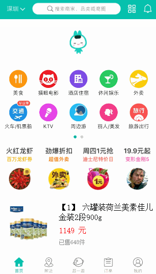

原文出处:本文由博客园博主老梁讲Java提供。
原文连接:https://www.cnblogs.com/sky-chen/p/11041434.html
原文连接:https://www.cnblogs.com/sky-chen/p/11041434.html
1. uni-app学习（四）好用的插件2
1.1. 树形结构
- 点击这里
1.2. 下拉刷新上拉加载组件
- 如果想把下拉上拉做成自定义的，更加好看，可以使用这个插件
- 地址这里
- 举个例子

1.3. 浮动键盘
- 自定义的键盘，用来限制输入不错
- 类型有：keyboard 普通键盘 car 汽车键盘 number 数字键盘
- 特别注意：如果只是需要数字键盘，不一定需要使用插件，uni-app自带input中有键盘类型，支持如下，设置type类型为下列值就行，文档地址在这
| 值 | 说明 |
|---|---|
| text | 文本输入键盘 |
| number | 数字输入键盘 |
| idcard | 身份证输入键盘 |
| digit | 带小数点的数字键盘 |
1.4. 区间滑块
- uni-app官方没提供区间滑块，可以用这第三方
- 点击这里
1.5. 添加水印
- 主要就是css的样式，可以直接用这个插件，或者参考下它的
1.6. 图表组件
1.7. 带缩放的轮播
- 这里
- 效果

1.8. 证件识别—Android，iOS
- 收费插件，自行斟酌
- 这里
未完待续